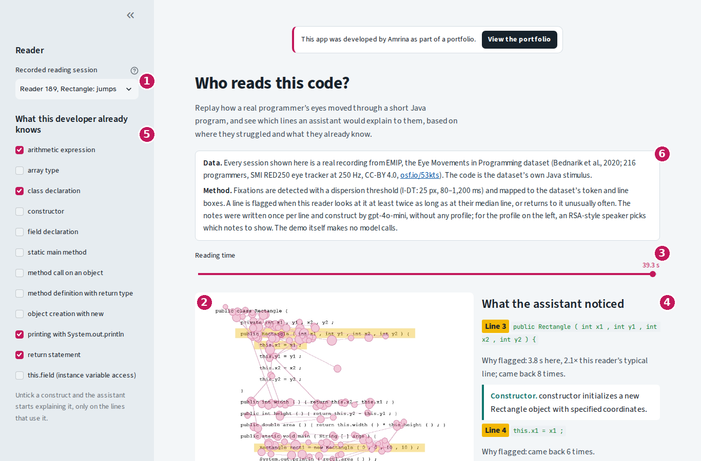
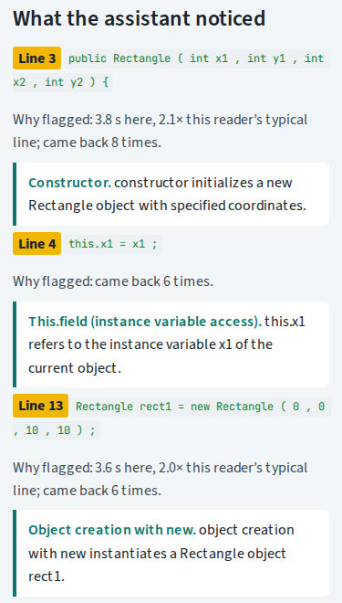
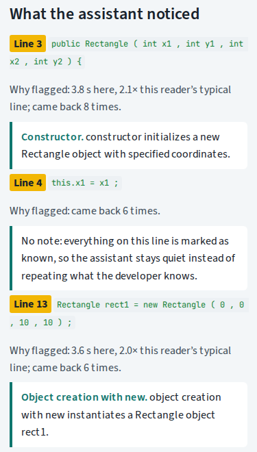
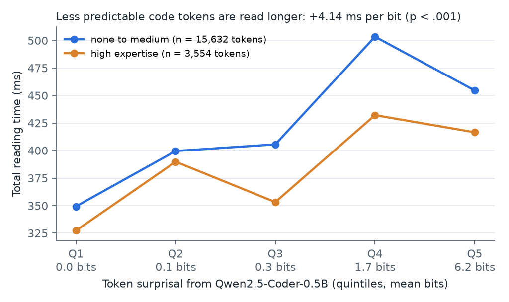
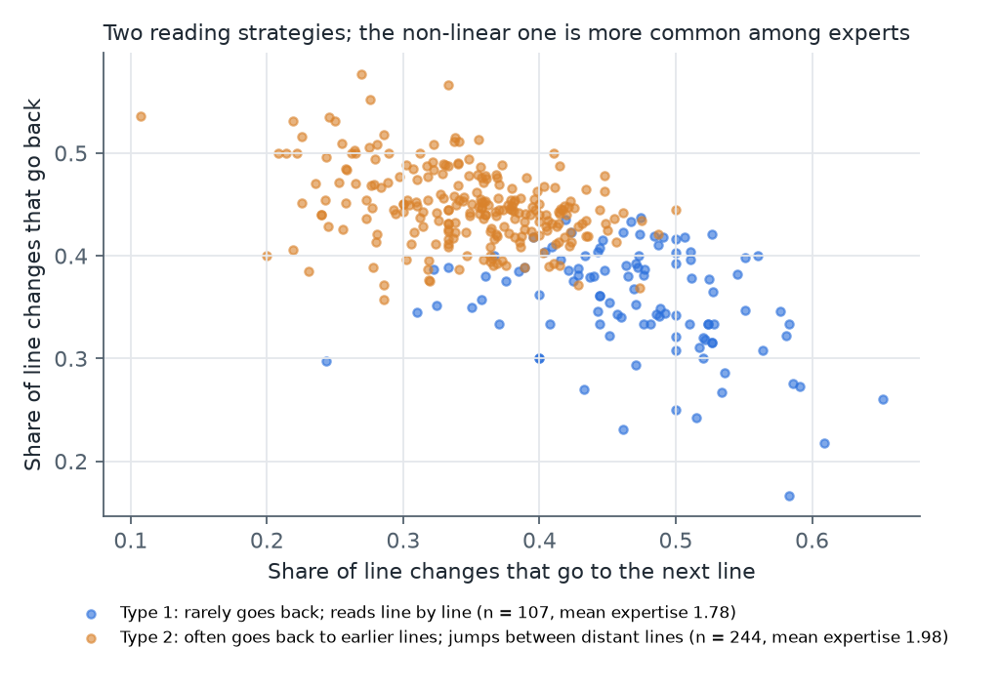
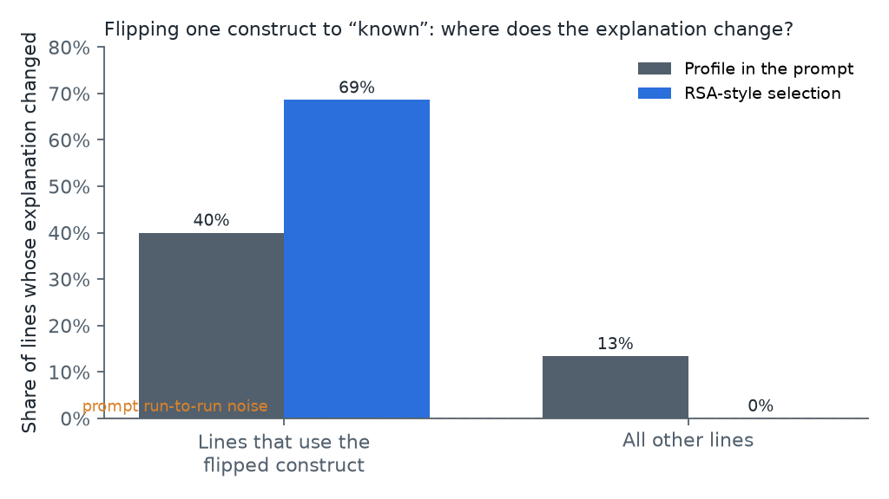
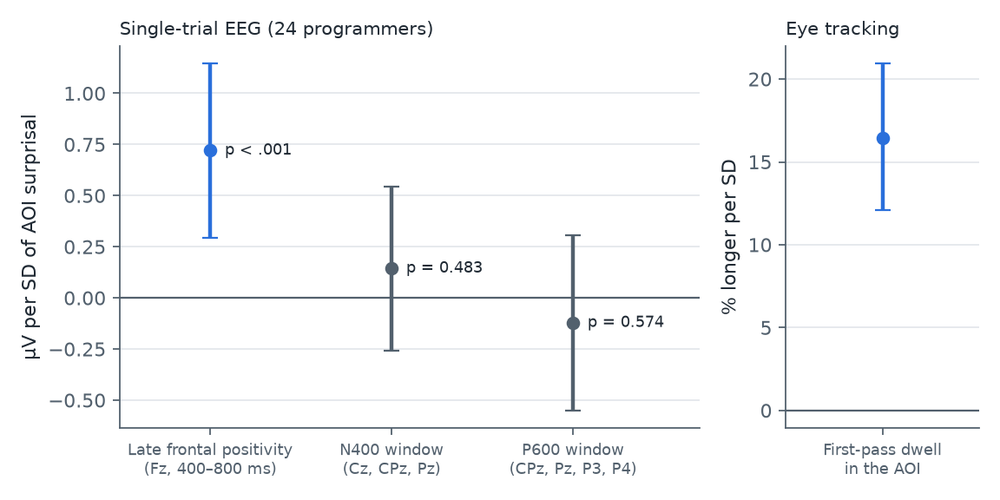
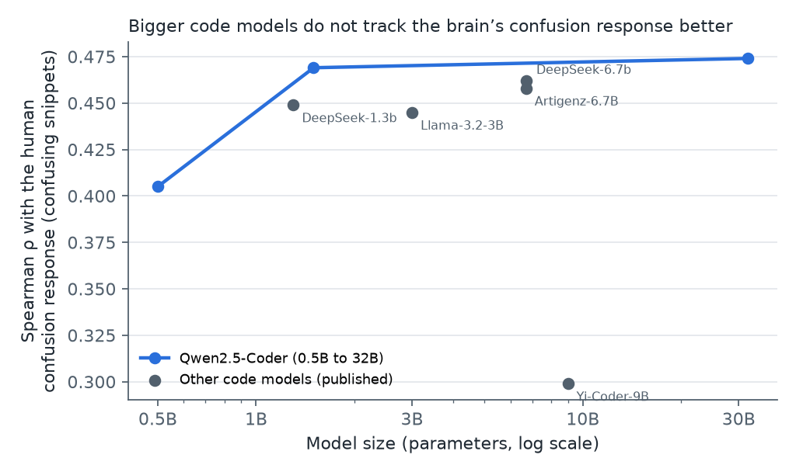

The question
AI coding assistants explain, test and generate code in the same way for everyone. Yet experience changes where programmers look and in which order: experts read code less linearly than novices (Busjahn et al., 2015). In text reading, how long the eyes rest on a word tracks how predictable that word is (Demberg and Keller, 2008). If the same holds for code, and if readers fall into recognisable types, an assistant could learn who is reading and adapt. That raises a second question: when an assistant is told about a developer, does its explanation change only where it should?
The hypotheses and analysis plan were written down before the gaze data were loaded, and every result is reported whether it supports them or not.
Data and methods
Where the data comes from. EMIP, the Eye Movements in Programming dataset (Bednarik et al., 2020), published openly on OSF under a CC-BY 4.0 licence. 216 programmers read two short programs, Rectangle and Vehicle, in Java, Python or Scala, while an SMI RED250 eye tracker recorded their gaze 250 times per second; each then answered a comprehension question and a background questionnaire with self-rated expertise.
What this project uses. The 207 Java readers. After the exclusions set out in the study plan (tracking loss above 30 %, fewer than 30 fixations, gaze mostly off the code), 351 reading sessions from 185 programmers remain: 44,912 observations of one person reading one code token.
- From gaze samples to fixations
- The gaze position is averaged over the valid eyes, and fixations are found with a dispersion threshold (I-DT; Salvucci and Goldberg, 2000): the eyes count as resting while they stay within 25 pixels for 80 to 1,200 ms.
- From fixations to code tokens
- EMIP ships a box for every line and every token of the code, in the same order as the source file (Al Madi et al., 2021). Each fixation is assigned to the box it falls in, which gives, for every token, its total reading time, first-pass gaze duration and whether it was skipped.
- How predictable each token is
- A small open code language model, Qwen2.5-Coder-0.5B, reads the program from the top and gives each token a surprisal, −log₂ p(token | preceding code), in bits.
- Statistics
- Linear mixed-effects models (statsmodels) relate surprisal to log reading time, with random intercepts for readers and tokens and controls for token length, line, position and frequency; skipping uses logistic regression with reader-clustered errors.
- Reader types
- For each session: how often a line change goes to the next line, how often it goes back, the regression rate, fixation duration and coverage. k-means clustering on these features (k chosen by silhouette) gives the types.
- Adaptive explanations and their faithfulness
- gpt-4o-mini writes one short note per line and programming construct, without knowing the reader. A speaker in the Rational Speech Acts framework (Goodman and Frank, 2016) then picks, line by line, the notes a developer with a given profile needs. As a comparison, the profile is pasted straight into the prompt. Flipping one construct to “known” shows which lines each system changes.
How the app works
The live demo is like sitting next to a programmer while they read code and watching where their eyes go. It replays eight real EMIP sessions and shows what an assistant would explain to that person. It makes no model calls, so it runs instantly.

- Choose a reader. Eight real sessions from EMIP. The label says who is reading: the participant number from the dataset, the program, the reader type from finding 2 (line by line, or jumping back and forth) and their self-rated expertise.
- Watch the eyes on the code. This is the screen the participant saw. Each magenta circle is one fixation, a moment when the eyes rested; the bigger the circle, the longer they stayed. Thin lines show where the eyes moved next. Yellow lines are lines that look effortful for this person: they looked at them at least twice as long as at their typical line, or kept coming back.
- Move through time. Drag the reading-time slider from zero to the end and the gaze builds up as it happened. This imitates an assistant that watches while someone reads: the longer they read, the more it can notice.
- See what the assistant noticed. For every yellow line, the panel says why it was flagged, for example “3.8 s here, 2.1× this reader’s typical line; came back 8 times”, and shows the notes the assistant would give, such as an explanation of the constructor or of
this.x1. - Tell the assistant what this developer already knows. The ticked constructs are known. Tick one more and its notes disappear, only on the lines that use it; every other note stays exactly as it was. This is the faithfulness property tested in finding 3.
- Check where the data comes from. The box under the title names the dataset (EMIP, with a link to the original on OSF) and the methods: how fixations are detected, when a line is flagged, and how the notes were written and selected. Below the replay, What the studies found summarises the three results.
Try it in three minutes
- Open the live demo. Reader 189 is selected; the panel flags lines 3, 4 and 13.
- In the sidebar, tick this.field (instance variable access). The note on line 4 disappears; the notes on lines 3 and 13 stay the same.
- Drag the slider back to about 10 seconds to see what the assistant could already tell early on.
- Switch to a reader of the type “reads line by line, rarely goes back” and compare how calmly the eyes move down the code.


Finding 1: surprising code is read longer

Finding 2: two ways of reading code

Finding 3: telling a model about a developer changes more than it should
A developer profile marks constructs such as constructors, this. fields or new as known or unknown. Flipping one construct to “known” should change only the lines that use it. Two systems were compared with the same language model:
| System | Lines using the construct that changed | Other lines that changed |
|---|---|---|
| Profile pasted into the prompt | 40 % | 13 % |
| Notes written once, then selected per line by an RSA-style speaker | 69 % | 0 % |
Rerunning the prompt-only system with an unchanged profile changed at most 2.5 % of lines, so the 13 % is leakage, not noise. Separating what to explain, chosen from the profile with a literal listener in the Rational Speech Acts framework (Goodman and Frank, 2016), from how to say it keeps the adaptation where it belongs.

Part B: open questions from the Saarland EEG studies
Two recent studies from Saarland University measured programmers’ brain responses to confusing code. Bergum et al. (2026) recorded EEG and eye tracking while 24 programmers read 72 pairs of short Java snippets with and without an atom of confusion, and found a late frontal positivity 400–700 ms after the first fixation on the confusing part. Abdelsalam et al. (2026) showed that code-model perplexity peaks where this response is large. Both papers name open questions: individual differences, single trials and eye-tracking measures, other EEG components, model size, and assistance that was proposed but not built.
| Open question in the Saarland studies | Tested in | Answer |
|---|---|---|
| Q1 Individual differences; can prior knowledge enter the model? | Findings 1, 4 | The surprisal effect does not depend on experience |
| Q2 Snippet means only; eye tracking not tested inferentially | Finding 4 | Surprisal predicts single-trial EEG beyond the label, and dwell time |
| Q3 Only one EEG component | Finding 4 | No N400 or P600 effect |
| Q4 Does model size matter? | Finding 5 | No: 1.5B matches 32B |
| Q5 Detection at 64 %; assistance not built or evaluated | Findings 3, 6 | Gaze adds nothing to perplexity; faithful selection and a demo exist |
| Q6 RSA listeners set by hand | Finding 7 | A listener learned from reading times stays faithful |
In short: code-model predictability tracks where programmers struggle, but not which programmer struggles more. Personal differences have to be modelled, not assumed, and an assistant’s adaptation has to be built into how it selects content, not requested in a prompt.
Where the data comes from. The single-trial fixation-related potentials, first-pass dwell times and questionnaire of Bergum et al. (2026), published openly on Zenodo (CC-BY 4.0), and the stimuli, areas of interest and AOI perplexities of six models from the replication package of Abdelsalam et al. (2026) on GitHub.
Method. Our own perplexity code first reproduces their published values exactly (r = 1.00 over 144 snippets), then adds Qwen2.5-Coder 0.5B and 1.5B. Mean amplitudes are taken in three windows (Fz 400–800 ms, as in the original study; an N400 window at Cz, CPz and Pz, 300–500 ms; a P600 window at CPz, Pz, P3 and P4, 600–900 ms) and modelled with crossed random intercepts for programmers and snippet pairs. The hypotheses were added to the study plan before these analyses.
Finding 4: predictability explains the brain response trial by trial

Finding 5: bigger models do not track the brain better

Finding 6: gaze does not add to perplexity for detection
Finding 7: a listener learned from human data keeps explanations faithful
Instead of hand-set probabilities, the RSA listener can be estimated from EMIP: novices spend the most extra time on String[] args and main, constructors, field declarations and class headers. With this learned listener a novice profile gets 26 notes for Rectangle and an experienced profile 5, and flipping one construct to known still changes no other line. Exploratory.
Limits
Two short programs in EMIP and short snippets with 24 programmers in the EEG data; self-rated expertise; random intercepts only. A first version of the EMIP models nested tokens within readers; the corrected, crossed models are reported and the correction is logged in the study plan. The fixation detector splits long fixations, so absolute durations are short. The explanation experiment tests where explanations change, not whether developers understand them better: nobody has read the generated notes yet. The EEG analyses use the published, artifact-corrected epochs, and the demo’s rule for flagging difficult lines is simple and unvalidated.
Run and test it yourself
Everything runs on a laptop CPU. The EMIP raw data (515 MB) is downloaded from OSF; processed tables, figures and the demo data are in the repository.
git clone https://github.com/sayamrina/who-reads-this-code && cd who-reads-this-code python -m venv .venv && . .venv/bin/activate pip install torch --index-url https://download.pytorch.org/whl/cpu pip install transformers pandas statsmodels scikit-learn matplotlib streamlit openai pillow pytest python src/surprisal_run.py && python src/build_dataset.py python src/study1.py && python src/study1b.py OPENAI_API_KEY=... python src/study2.py streamlit run app/streamlit_app.py pytest
About
This project grows out of my master’s thesis at Saarland University, an AI tutor that answers from course materials and shows its sources, and out of an earlier pilot on user models for language models, Whose Inference?. Hypotheses, analysis plan, construct rules and interpretation are my own; the full report with all numbers is in the README.
References
Abdelsalam, Y., Peitek, N., Maurer, A.-M., Toneva, M. and Apel, S. (2026) ‘Are humans and LLMs confused by the same code? An empirical study on fixation-related potentials and LLM perplexity’, in Proceedings of the 48th IEEE/ACM International Conference on Software Engineering (ICSE 2026).
Al Madi, N., Guarnera, D.T., Sharif, B. and Maletic, J.I. (2021) ‘EMIP Toolkit: a Python library for customized post-processing of the eye movements in programming dataset’, in ACM Symposium on Eye Tracking Research and Applications (ETRA ’21 Short Papers). New York: ACM.
Bednarik, R. et al. (2020) ‘EMIP: the eye movements in programming dataset’, Science of Computer Programming, 198, 102520.
Bergum, A., Maurer, A.-M., Peitek, N., Bader, R., Mecklinger, A., Demberg, V., Siegmund, J. and Apel, S. (2026) ‘Fixation-related potentials reveal that confusing program code elicits a late frontal positivity’, Scientific Reports, 16, 16833.
Busjahn, T. et al. (2015) ‘Eye movements in code reading: relaxing the linear order’, in Proceedings of the 23rd IEEE International Conference on Program Comprehension (ICPC). Florence: IEEE, pp. 255–265.
Demberg, V. and Keller, F. (2008) ‘Data from eye-tracking corpora as evidence for theories of syntactic processing complexity’, Cognition, 109(2), pp. 193–210.
Goodman, N.D. and Frank, M.C. (2016) ‘Pragmatic language interpretation as probabilistic inference’, Trends in Cognitive Sciences, 20(11), pp. 818–829.
Oh, B.-D. and Schuler, W. (2023) ‘Why does surprisal from larger transformer-based language models provide a poorer fit to human reading times?’, Transactions of the Association for Computational Linguistics, 11, pp. 336–350.
Salvucci, D.D. and Goldberg, J.H. (2000) ‘Identifying fixations and saccades in eye-tracking protocols’, in Proceedings of the 2000 Symposium on Eye Tracking Research and Applications (ETRA). New York: ACM, pp. 71–78.